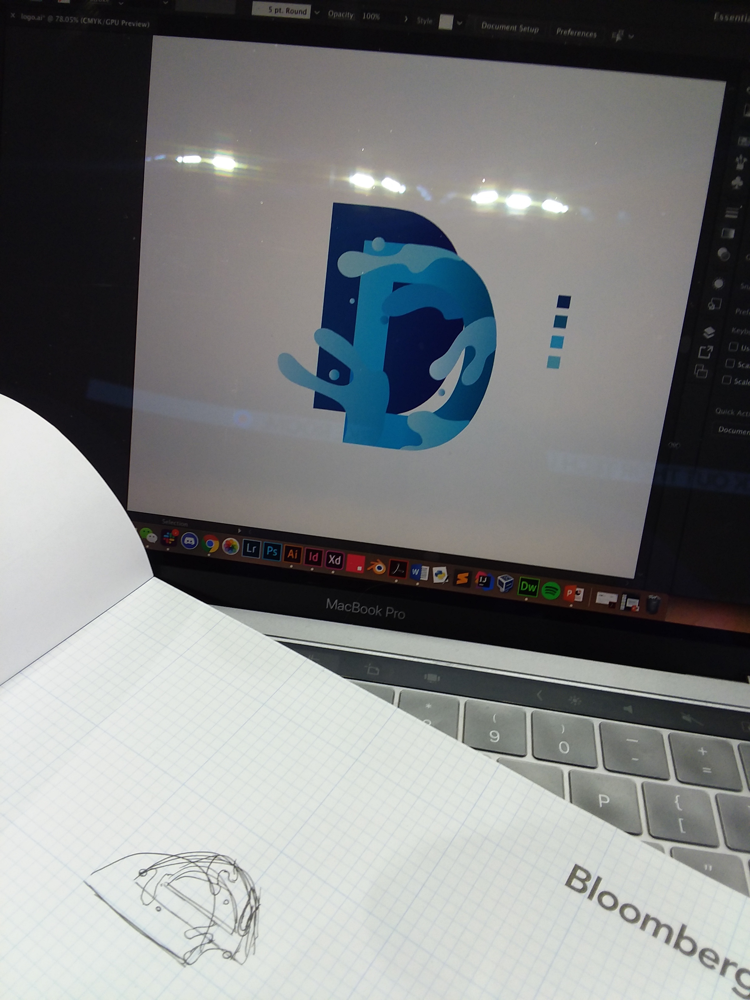
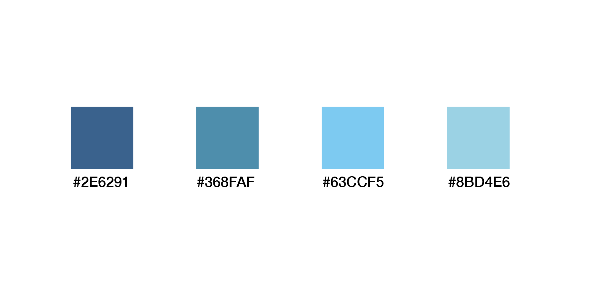
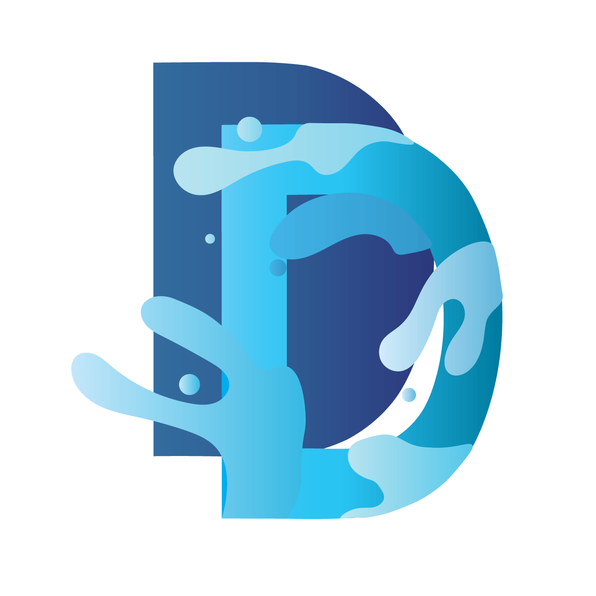
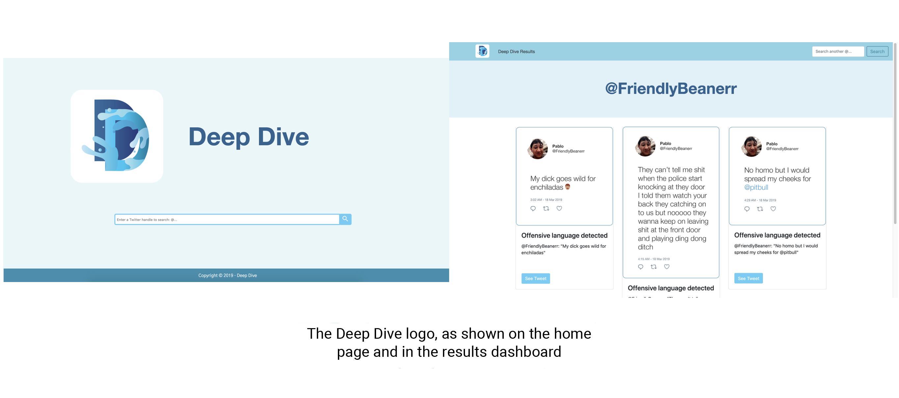

 See the GitHub repository for this project here. The submission on Devpost can be found here.
Deep Dive is an application that allows HR recruiters to check a potential applicant’s Twitter profile for hate speech and/or offensive language using natural language processing. It was created at TechTogether Boston 2019 by me and my 4 teammates: Theresa McNeil, Shruti Jana, Leah Rice, and Braanah Craig. We created Deep Dive with this dataset for hate speech detection, this paper on convolutional neural networks for sentence classification, pretrained Twitter word embeddings from GloVe, far too much caffeine, and about 15 hours of sleep among the five of us.
Note: due to the nature of this project being that it detects social media posts with hateful and offensive language, some of the images included in this case study, which are from the actual application, contain offensive language.
Deep Dive comprises a web application and an iOS application. Because our team also decided to write and train a convolutional neural network from scratch, we had our work cut out for us for the weekend. Each team member was delegated a certain role, be it data pipelining, app development, CNN-writing, or, in my case, creating the web application and focusing on the branding of the minimum viable product we planned to submit for the hackathon. To this end, I'm proud to say that I created a web application, which we hosted locally during TechTogether, using Bootstrap for the first time. However, I actually found the most challenging design problem of the project to be designing Deep Dive’s logo.
How can I create an icon that appropriately communicates the intention of Deep Dive?
Deep Dive was given its name for two reasons: first, because it uses deep learning, and second, because it allows its users—recruiters—to take a “deep dive” into the background of a job applicant, uncovering potential traits that might detract from the creation of an inclusive and welcoming workplace environment down the line. As a result, I decided to create a logo that encompassed a duo of “D”s in some way, reflecting not only literal the name of the project, but also its dual functionality. My initial sketches, with the favorite design as chosen by my teammates circled, are shown to the right.
When looking at the intended user of the project—recruiters—I realized that if they were incorporating a natural language processing application as part of their decision-making process, the company for which they worked would most likely be associated in some way with cutting-edge tech. To reflect the technological aptitude of those who would be using the product which the logo would be representing, I chose to create a vector graphic (no hand-drawn or rasterized imagery) to relay a modern and technologically advanced feel to the logo. For this, I turned to Adobe Illustrator.
In Illustrator, I began by setting a color palette for the logo, choosing various shades of blue. First and foremost, I wanted Deep Dive to be accessible and easy/comfortable to use—blue is a good choice because it’s not a harsh or glaring color, and when used on top of white (like in the Deep Dive logo, which is set over a white background), it is easily readable by everyone, even if the user cannot see the full color spectrum.
The shades pictured above were meant to resemble the depths of the ocean, illustrating the “dive” into an applicant’s background. Blue is also commonly associated with trust, confidence, and responsibility, and our team wanted the users of our product to trust the application and to use information gleaned from it to feel confident that they were hiring applicants who would help foster an inclusive workplace environment. Additionally, if a employee of a company were to post something offensive on his/her social media, this would reflect poorly upon the employer; thus, the association of responsibility was demonstrated by the color choice: Deep Dive indicates how responsible a potential applicant might be at maintaining a professional online presence.
Finally, our hackathon project was geared toward Twitter and was trained on tweets, making the blue color palette congruous with the blue color of the Twitter logo and interface; thus, the product’s logo alludes to its use case. While a weekend hackathon would only allow for the development of a Twitter-based application, my team and I were excited to expand on the project, and so the blue color scheme once again aptly represented the other situations in which Deep Dive might be used (other notable and widely-used social networking sites with blue user interfaces include Facebook, Tumblr, and LinkedIn).
My initial sketches all encompassed 2 “D”s, but I realized that simply having two letters made for a very mundane logo. Since Deep Dive's hallmark is a the novel way it presents for assessing a job applicant’s hireability, the logo should reflect that notion and be the opposite of forgettable and generic, which is how most of my initial sketches looked. Upon pondering the connotations and associations that people might think of when they hear “Deep Dive,” I decided to incorporate water splash imagery into the logo, once more illustrating the “dive” that our project would allow its users to take into the background of a job applicant.
I took to Illustrator to create a higher fidelity mockup of the logo, as pictured to the right. I then reflected on the current stage of the logo. By using solid colors throughout, the logo looked one-dimensional and static, which did not accurately represent the dynamic, machine learning-based nature of Deep Dive. My brainstorm of ways to fix this yielded a few possibilities: adding a drop shadow, using gradients, or adding more lines and highlights to the graphic. Out of these, I felt that using gradients was the best option, as doing so would give the image more dimension while also continuing the motif of deep ocean imagery (the blue gradients mimic the gradient of the ocean as it gets deeper).
Rather than applying a gradient to the entire logo all at once, which gave the icon a rather flat appearance, I applied a gradient to each of the independent elements of the image, making sure to vary the range of colors in each gradient to create even more dimension in the logo. For each vector in the logo, I set the direction of the gradient (light to dark) as going from left to right. People have been shown to read images from left to right, so this hue progression from light to dark conveys a “dive”—shallow to deep.
Note: the image below contains offensive language
Deep Dive's web component was created by building off of Adobe Dreamweaver's Bootstrap framework. Though I'd never worked with this framework prior to the hackathon, its emphasis on creating informative web pages aligned precisely with my goal of creating a web-based application that would inform recruiters of the hireability and/or character of an applicant, so I decided to give it a shot.
On Deep Dive's home page, as shown above (left), the logo is accompanied by the name of the application; both are centered in the screen so that they are the main focus. The only other element on the home page is the search bar, where the user can input a Twitter handle. The resultant flagged tweets from under that handle, if any, are displayed on a dashboard (right) with 3 columns for easy readability. Each tweet widget displays an image of the actual tweet itself, the quoted material from the tweet, and a button that will display the actual tweet on Twitter if clicked. We felt the last component to be especially important in the event that a tweet containing offensive language or hate speech was, in actuality, not condoning it or using it in an offensive/hateful way. Providing this context would eliminate the possibility of falsely flagging an applicant.
The Deep Dive web app's interface utilizes the same color scheme as the logo, creating a single fluid and harmonious visual theme. Once again, I created an intentionally simple and clean UI for the results dashboard; it displays only the necessary page elements: the Deep Dive logo and name in the top left corner, a search bar, the Twitter user for whom the results are being displayed. This decision was made so as not to detract from all the information presented in the dashboard. Deep Dive's users (recruiters) lead very busy lives, and they go through dozens upon dozens of resumes and profiles a day. I was aware that providing Deep Dive meant adding yet another profile to view for each applicant, further complicating and busying the job of the user, so I made sure to keep the layout of all the pages of the site as simple as possible, eliminating any confusion or unnecessary elaboration. Doing so would enable a recruiter to navigate the Deep Dive web application without hassle and to gain information from it as quickly and as efficiently as possible.
Due to the time constraints I had during the hackathon, and because I also needed to create the web application for Deep Dive using a framework that was completely new to me, I wasn’t able to reflect and improve more upon my logo design (aside from the feedback I had gathered in the earlier stages of the logo's design from my team members and from fellow hackers who were working at the tables nearby).
I don’t consider the Deep Dive logo to be a final product; rather, I feel that it’s still a prototype, and an early one at that. Ideally, I’d like to continue to work on this logo, bringing it to regular people and its target audience (recruiters) alike. Does the logo convey different notions to the average person than it does to its specified user audience of HR recruiters—and if so, what are they? I want to make sure that the symbolism of Deep Dive’s logo can be at least understood by everyone, not just by the esoteric audience that is using the product. Even though people working in other professions might not need to use this application, if they ever happen to view it, I don't want the logo to misrepresent Deep Dive.
While I’m aware of everything the logo needs to encapsulate because I created it and contributed to the development of the application it represents, does the logo accurately convey those ideas to people who didn’t build the product? The limited feedback I managed to get during the hackathon was from my own teammates, who knew the ins and outs of the project, and from other hackathon participants (who were all developers and designers as well), so it came from a rather niche sample of the population, and one that was more predisposed to bridge the semantic gap between the logo's imagery and the purpose of Deep Dive. Are there any aspects, major or minor, that I failed to convey, even though I thought I had fulfilled them? Furthermore, are there any associations/ideas that I may have missed entirely throughout the design process up until the current iteration of the logo?
While this case study focuses mainly on the development of Deep Dive's logo, which I found to be the most challenging design hurdle because I needed to encapsulate so much into a single icon, I also sought feedback for the web application. Many of the representatives from TechTogether's sponsor companies who were present were involved in the recruiting process for their corporation. Several other factors meant they fit in the role of our intended user: they were representing a company that, as the sponsor of a hackathon, was invested in some way in innovative technologies, and since TechTogether is one of the largest female and non-binary hackathons, their companies' support of the women and non-binary participants of the event indicated that they were dedicated to creating a level playing field for those who are underrepresented in many tech fields. This meant that the companies present at the hackathon shared Deep Dive's goal of creating more inclusive workplaces, aligning the recruiters perfectly with our target user. I couldn't think of a more auspicious opportunity during which to get feedback for this project.
Note: the image below contains offensive language
When approaching recruiters at the event for feedback, I made sure to ask specifically whether they thought this implementation of Deep Dive's service was conducive toward their productivity. Because Deep Dive was created with the hopes that it would ease the job of the recruiter by presenting even more information about the character and tendencies of an applicant, I wanted to ensure that the layout and user interface of the web application did not interfere with streamlining its users' decision-making process.
Many of those to whom I spoke voiced their agreement over how Deep Dive provided a useful insight into an applicant, one that would be impossible to discern from a cover letter or a resume. The clean UI (as pictured above) was, they affirmed, intuitive and easy to navigate. However, one HR representative brought up an extremely constructive concern: as a recruiter, her job requires looking at hundreds of resumes a week. As I anticipated, adding a social media background check adds yet another task to the mix. Therefore, if she were ever to use a service that found offensive or hateful language, and it flagged an applicant for using either type of language, her job's fast-paced demands meant she would immediately stop considering the applicant. This presented a problem if the applicant's account was falsely flagged by Deep Dive; while I included a "See Tweet" button that linked directly to the tweet in question in order to provide context, this recruiter brought to my attention that Deep Dive's users probably wouldn't have the time at their disposal to use this function.
This issue certainly hinders the viability and fit for Deep Dive's target audience. In order for Deep Dive to cater to the demands of its user, it needs to be improved in some way that reconciles both the flagged tweet and its context on the dashboard, so that the recruiter does not need to spend the time to click a button and be redirected to an external site. It also must be displayed on the dashboard in a way that is minimal, free of distractions, and easy to read at a quick glance, which is all the time that Deep Dive's user will have.
Though Deep Dive may fall under the category of machine learning, its users are still human. As its head designer, my goal is for its interface to be as intuitive and efficient as possible for its users and for its logo to express its purpose to all those who will be seeing and using it.